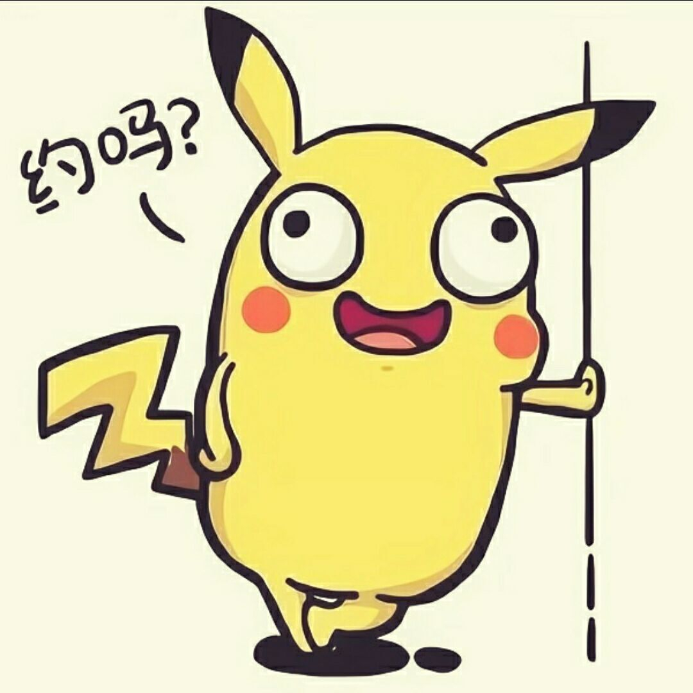
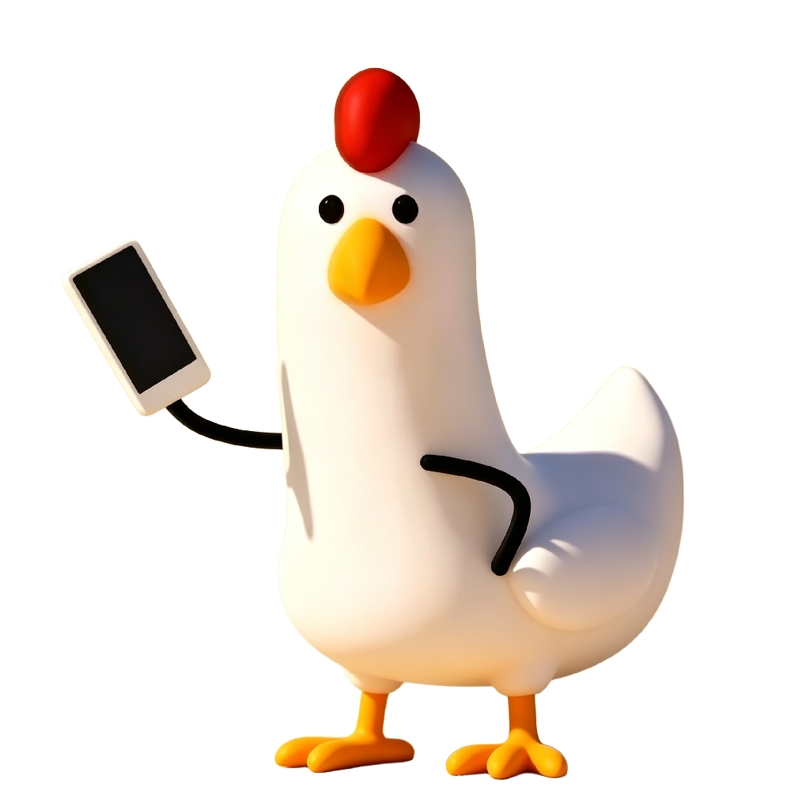
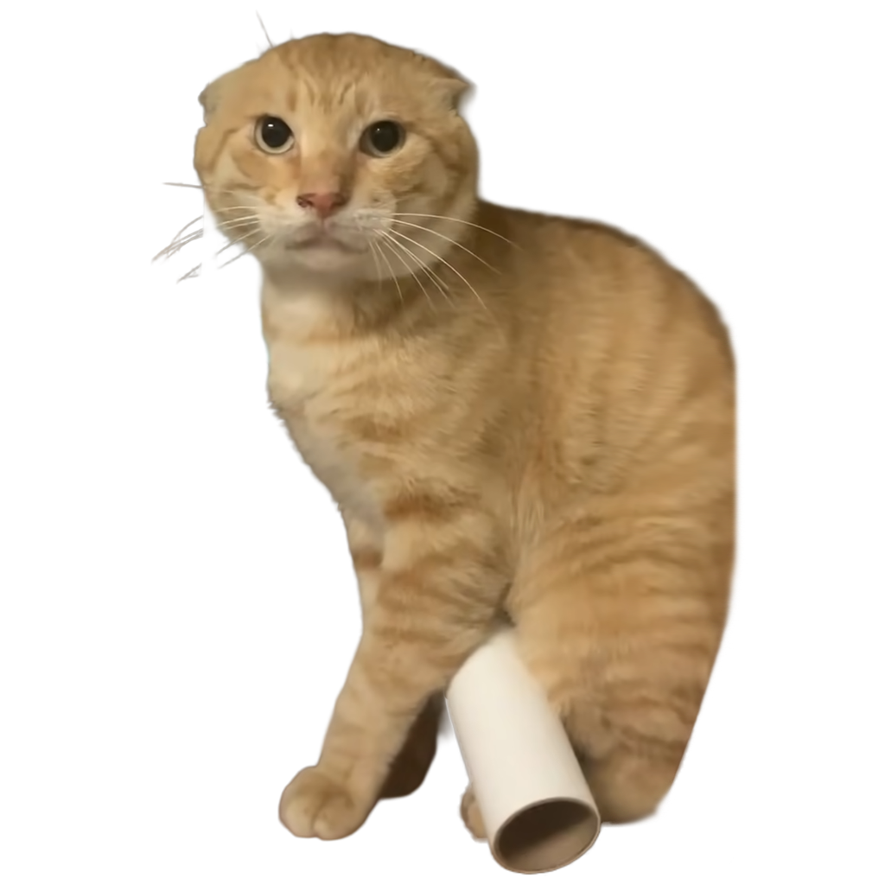

C
r
e
a
t
e
d
b
y
M
a
r
k
C
u
p
C4
←
C3
C4
→
C5
音乐
音效
设置
点击设置
切换大狗叫音效
设
置
作者 · Creator

马克杯MarkCup
bilibili 创作者
主页
开发视频 · Dev Video
点击即玩世界上最爽的大狗叫模拟器
音效 · Sound
大狗叫
NEW

叮咚鸡

哈基米
哈基米形象 · Skin
原皮
默认形象
NEW
帝皇
观看开发视频后解锁
演奏 · Performance
钢琴模式
开放一个八度的音阶
八度切换
在屏幕边缘切换 C3–C6 起始八度
强化节奏
启用节奏吸附
显示网格
显示按键的网格
设置已通过哔哩哔哩云端同步
解锁新内容
观看开发视频后即可解锁，是否现在跳转？
暂不
前往视频解锁
大狗
Tap
狗 叫 加 载 中 …